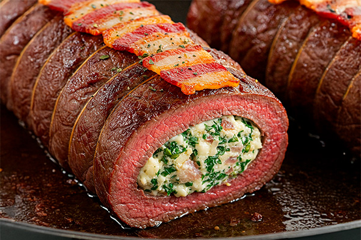

Picanha Invertida Recheada

Surpreenda seus convidados com esta técnica incrível! A picanha invertida mantém a carne suculenta por dentro e permite um recheio delicioso, enquanto a capa de gordura fica por fora, dourando e liberando sabor.
Ingredientes
Para a Picanha:
- 1 peça de picanha (aprox. 1.2kg a 1.5kg) com boa capa de gordura
- Sal grosso a gosto
- Pimenta do reino moída na hora a gosto
Sugestão de Recheio:
- 200g de queijo coalho em cubos pequenos
- 100g de bacon em cubos pequenos, frito e escorrido
- 1/2 xícara de cebola roxa picada
- 1/4 xícara de cheiro-verde picado (salsinha e cebolinha)
- Opcional: Alho picado, pimenta dedo-de-moça picada sem sementes
Você vai precisar:
- Faca bem afiada
- Barbante culinário
- Churrasqueira com brasa média/forte
Modo de Preparo
- Preparar a Picanha: Com uma faca afiada, faça um corte na parte mais larga da picanha (onde não tem a gordura), criando uma "boca". Vá aprofundando o corte com cuidado, sem furar as laterais ou o fundo, formando uma bolsa interna. Vire a picanha "do avesso", empurrando a carne para dentro e deixando a capa de gordura para fora. Tempere a parte interna (que agora está exposta) com sal grosso e pimenta do reino.
- Preparar o Recheio: Em uma tigela, misture o queijo coalho, o bacon frito, a cebola roxa, o cheiro-verde e outros opcionais que desejar.
- Rechear: Coloque o recheio dentro da bolsa da picanha invertida. Não encha demais para conseguir fechar.
- Fechar a Picanha: Com cuidado, use o barbante culinário para "costurar" a abertura da picanha, fechando bem para o recheio não escapar. Dê nós firmes.
- Temperar por Fora: Tempere a parte externa (a capa de gordura) com sal grosso.
- Assar: Leve a picanha invertida à churrasqueira com brasa média-forte (aproximadamente 40cm da brasa). Comece selando todos os lados, incluindo a parte da gordura, por alguns minutos até dourar.
- Cozimento Final: Após selar, suba a grelha ou mova a picanha para uma zona de calor indireto (mais fraco). Asse por cerca de 40 a 60 minutos (dependendo do tamanho da peça e do ponto desejado), virando ocasionalmente. Use um termômetro de carne para verificar o ponto (55-60°C para mal passado, 60-65°C para ao ponto, 65-70°C para ponto mais).
- Descansar: Retire a picanha da churrasqueira e deixe-a descansar por 5 a 10 minutos antes de cortar. Isso ajuda a manter os sucos na carne.
- Servir: Remova o barbante com cuidado e fatie a picanha invertida. Sirva imediatamente.
Dicas do Churrasqueiro
- Escolha uma picanha de boa qualidade, com uma capa de gordura uniforme.
- Seja paciente ao inverter a carne para não rasgar.
- Varie o recheio! Provolone, linguiça calabresa, azeitonas, pimentões também ficam ótimos.
- O tempo de descanso é crucial para a suculência. Não pule essa etapa!
Gostou desta Receita?
Receba mais receitas incríveis e dicas exclusivas diretamente no seu e-mail!